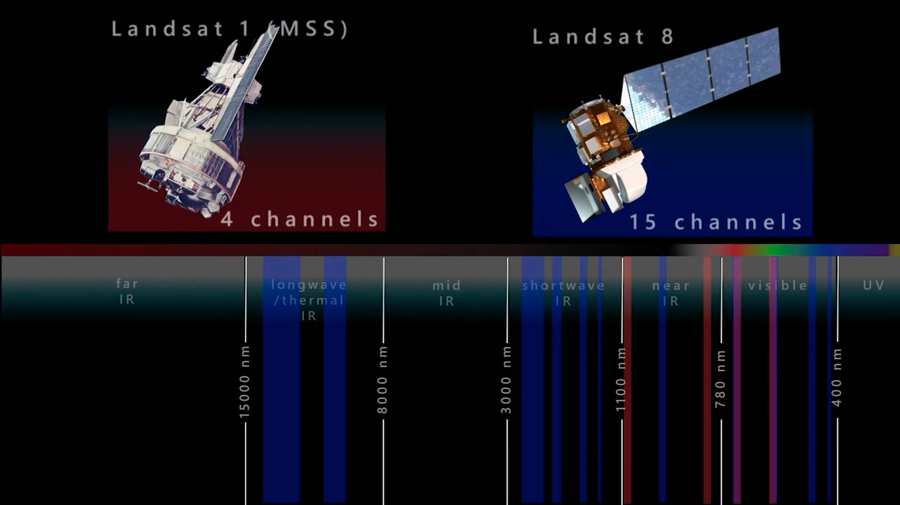
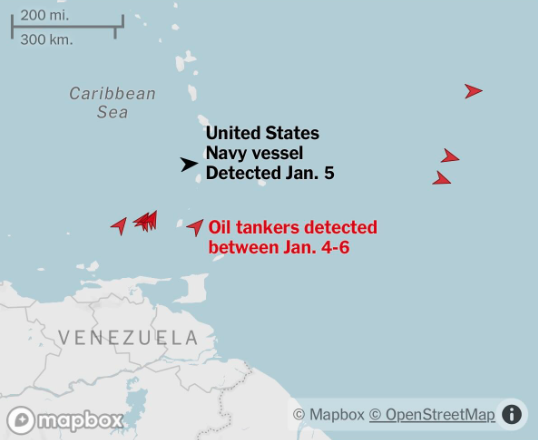
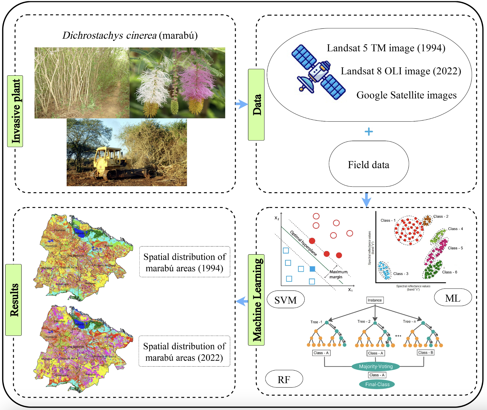

Introduction to Remote Sensing
What is remote sensing?
Put simply, remote sensing is a method of acquiring information from a distance through sensors mounted on a platform (e.g., satellites, planes, drones).
Active vs passive sensors
Passive sensors rely on naturally available energy, primarily sunlight, and do not emit energy themselves. As solar electromagnetic radiation (EMR) travels through the atmosphere and reflects off the Earth’s surface, it undergoes several interactions, including absorption, transmission, and scattering. These interactions can significantly reduce the amount of energy that reaches the sensor. Consequently, passive sensors are ineffective in low-light conditions and are unable to penetrate obstacles such as clouds, smoke, or dense vegetation, as these features scatter or absorb the reflected radiation.
Active sensors emit their own EMR and wait to receive the reflected energy. The emitted energy is often in the form of long wavelengths that are able to ‘pass through’ atmospheric obstacles which have smaller particle sizes (rather than being scattered, absorbed or reflected).
Spectral Signatures
Spectral signatures show how different materials reflect or absorb electromagnetic energy across a spectrum of wavelengths on the electromagnetic spectrum. Each feature on Earth has a unique spectral signature that is determined by physical and chemical properties and how it interacts with electromagnetic radiation.

An important feature in the spectral signature is the red edge - a sharp increase in reflectance around 700 nm in vegetation’s spectral signature, which indicates chlorophyll content and plant health.
Resolutions
The characteristics of remote sensors will determine the level of accuracy and detail of the information about the Earth’s surface.
Spectral Resolution
Spectral resolution refers to a sensor’s ability to distinguish between different wavelengths of electromagnetic radiation from the received signal. Each spectral band corresponds to a specific wavelength range, and averages its information across this range. Wider spectral bands reflect a lower spectral resolution. A higher number of bands reflects a higher spectral resolution.
Sometimes there are large gaps of wavelength ranges in the EMS in which no information is collected, and this is because the atmosphere does not allow certain wavelengths to pass. Thus, bands are often limited to atmospheric windows where wavelengths can penetrate.

What happens next?
Looking more closely at the Landsat 1 (MSS) satellite…
The information captured by each of the four spectral bands are stored as a greyscale image, which shows the reflection intensity of the Earth’s surface within each band. By combining the refletance information from each band, and then comparing this with spectral signatures, we can distinguish features of the Earth’s surface.

Other Resolutions
Spatial = The size of the raster grid per pixel, from 10cm to several kilometers.
Temporal = The time between revisits of information collection for a given location.
Radiometric = The ability of a sensor to identify and show small differences in energy.
*** Something about balancing / trade offs ***
Colour composites
Colour composites are images created by assigning different spectral bands to the red, green, and blue (RGB) display bands, and are used to highlight specific features that are often not visible to the human eye.
True colour composites (B4, B3, B2 for Sentinel-2) display the Earth as we would see it with our eyes.
False colour composites use non-visible bands in the near-infrared range alongside red and green (B8, B4, B3 for Sentinel-2) to provide information particularly useful for vegetation analysis. The choice of these three bands has to do with plants reflecting near-infrared and green light while absorbing red light (see spectral signatures for a reminder of this).
Expanding on this a bit more, we can make scatterplots (called a spectral feature space) of two bands against one another to see how much of our study area is covered by different features (in this case, dense vs sparse vegetation and dry vs wet soil).

Atmospheric penetration composites (B12, B11, B8A for Sentinel-2) have no visible bands so that the image penetrate atmospheric particles and reduces the effect of atmospheric scattering. The resulting image from this composite shows vegetation as blue and urban areas as white/grey or cyan/purple.

Tasseled Cap function
Although this isn’t a true colour composite, and rather acts more as a spectral index, it’s interpretation is somewhat similar.
The tasseled cap function is a spectral transformation that combines multiple spectral bands into three new composite layers - brightness, greenness, and wetness (which are assigned to the red, green and blue bands, respectively). The resulting image is a representation of different land cover types (red = urban structures, green = vegetation, blue = water/moisture).

LandSat & Sentinel Applications
CASA’s very own Ollie Ballinger used satellite images (with the help of complex AI software) from Copernicus’ Sentinel Hub to identify and track US Navy vessels operating with disabled transponders in the Caribbean. His findings appeared in a New York Times article, revealing a larger, more consistent presence of US Navy ships in the region than officials had admitted. The research ultimately pre-empted Operation Absolute Resolve in January 2026 - the large-scale US military strike that led to the capture of Venezuelan President Nicolás Maduro.

A bit more up my area of expertise (coming from background of ecology and conservation biology), is a study (https://www.mdpi.com/2072-4292/16/5/798) which usedsatellite imagery from Landsat 5 TM and Landsat 8 OLI to map and monitor the spread of the invasive plant Dichrostachys cinerea (marabú) in central Cuba over nearly three decades.
Something I thought was particularly interesting about this study is that it went beyond simply mapping the extent of invasive spread, by also quantifying the impact that its presence had on specific land covers. This is an important aspect of invasive species studies (and I think one which is often skipped), and shows that remote sensing can be used to inform management strategies and detect areas of priority.

Sentinel-2 vs LandSat 8
| Feature | Landsat 8 | Sentinel-2 |
|---|---|---|
| Satellite Constellation | Single satellite | 2 satellites (2A & 2B) |
| Spatial Resolution | 30 m | 10 m, 20 m, 60 m depending on band |
| Panchromatic Band | 15 m | None |
| Thermal Band | Yes, 100 m (resampled to 30 m) | No |
| Red Edge Bands | No | 3 bands (705, 740, 783 nm)* |
| Number of Bands | 11 | 13 |
| Revisit Time | 16 days | 5 days |
| Key Applications | Land use/land cover mapping, thermal monitoring, water temperature, urban heat studies | Agriculture, forestry, water quality, vegetation health, disaster monitoring |
* More bands within the red edge is useful for vegetation application due to the red edge!
This is a sentence with a hover note.
Reflection
Academically, my use of remotely sensed imagery has been limited to using true colour composites as a means of contextualizing a study area and setting the scene in the form of basemaps. Personally, I use Google Earth extensively to look for different hiking routes and places that look interesting when I am travelling.
This is the first time that I am going deeper than that. Even just from the first week it feels like I have learned to much about how remote sensors collect information, downloading the data and manipulating it to suite the needs of different applications.
Something that stood out for me was colour composites and spectral indexes. In my previous degree, Normalised Difference Vegetation Index (NDVI) was spoken about a lot as a proxy for vegetation health. Finally understanding how this is calculated using remote sensors (and distinct properties of the spectral signatures of vegetation) is really satisfying!
References
https://www.nv5geospatialsoftware.com/What-is-Remote-Sensing
spectral signature image = https://www.researchgate.net/figure/Spectral-signatures-as-functions-of-wavelength-for-five-typical-surfaces-The-central_fig4_318843407
https://www.instagram.com/p/DTRSx-6kbXO/
chrome-extension://efaidnbmnnnibpcajpcglclefindmkaj/https://geofaculty.uwyo.edu/rhowell/classes/remote_sensing/labs/lab_11_2018_alternate_vegetation.pdf